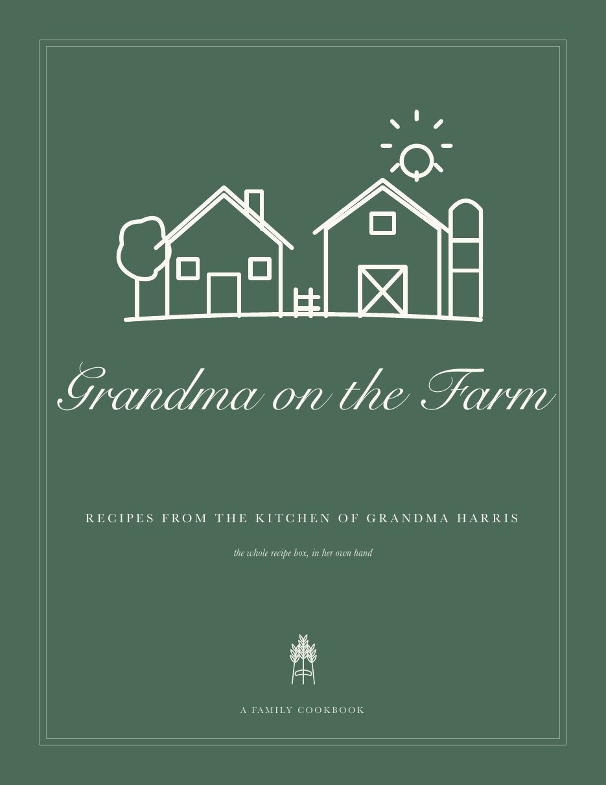
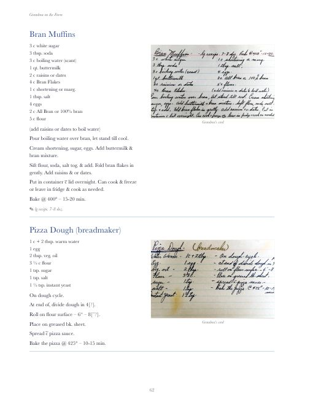

The green metal box sat in the kitchen for decades and slowly filled up: index cards in blue ballpoint, recipes copied out of the Mennonite cookbook and the Best of Bridge, clippings from the paper, a punch from the gas company, and a stack of children’s crafts and household hints tucked in the front. Behind the yellow tab dividers is the record of a lifetime of feeding people.
This book holds every card — 446 recipes — transcribed exactly as she wrote them, each with a photograph of the original card alongside. Chapters follow her own tabs. Nothing has been “improved”: if she wrote bake till done, that is the instruction.
The PDF is the full 346-page book with full-size facsimiles of the cards — the file to send to a printer or read on a tablet. The online edition is the same book with smaller pictures so it loads quickly.
Inside the book

Seventeen chapters, in her order: Beverages & Punches · Hors d’Oeuvres, Dips & Sandwiches · Breads, Buns & Muffins · Breakfast, Eggs & Cheese · Soups & Stews · Salads & Dressings · Meats · Poultry & Stuffings · Fish & Seafoods · Casseroles · Vegetables · Sauces · Pies & Pastries · Desserts & Puddings · Slices, Bars & Sweet Treats · Frostings & Fillings · Preserves, Pickles & Pantry — and an appendix of the play-dough, bubble mix, remedies and hints from the front of the box.
At the back: The people in her recipes — everyone she credited on a card, from “our Margaret” to the lady in the hospital — and a full index.
Reading her cards. A little of her shorthand:
- c̄ with
- H2O water
- oleo margarine
- V.G. very good — her top rating
- tin a can
- icing sugar powdered sugar
- over continues on the back
- 350° Fahrenheit, always
Print your own copy
The book is laid out for a US Letter (8.5 × 11 in) hardcover. Any print-on-demand service (Lulu, Blurb, Mixbook, a local print shop) can print it from the files on the downloads page: the interior PDF (346 pages) and the front/back cover panels. Recipes are also available as plain data (recipes.json) for anyone who wants to make something else with them.